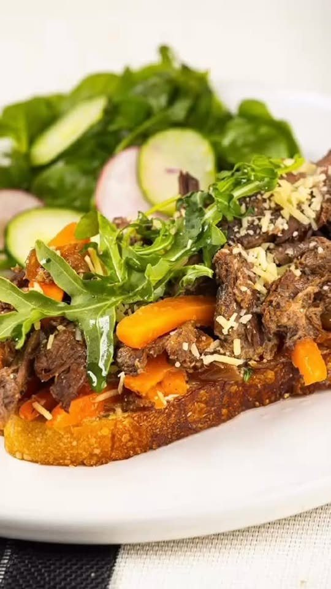
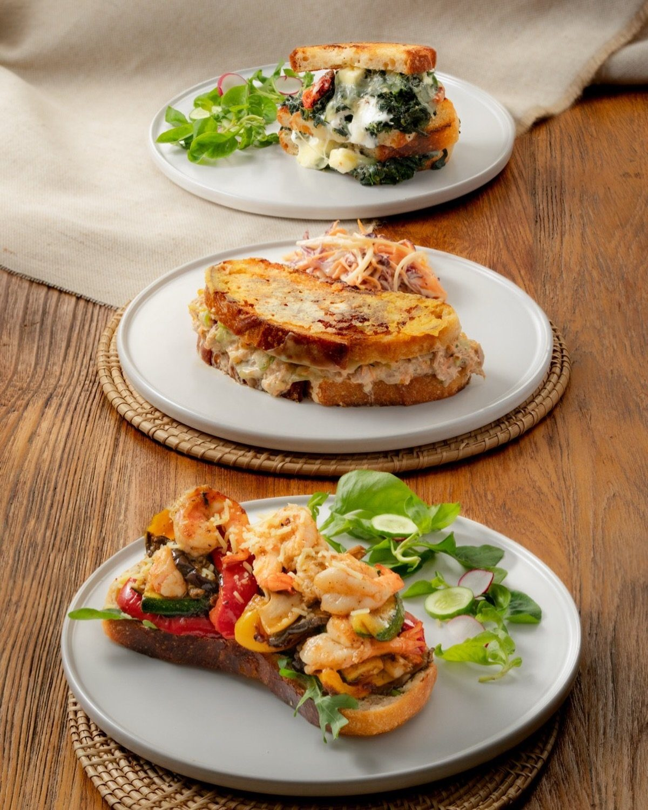
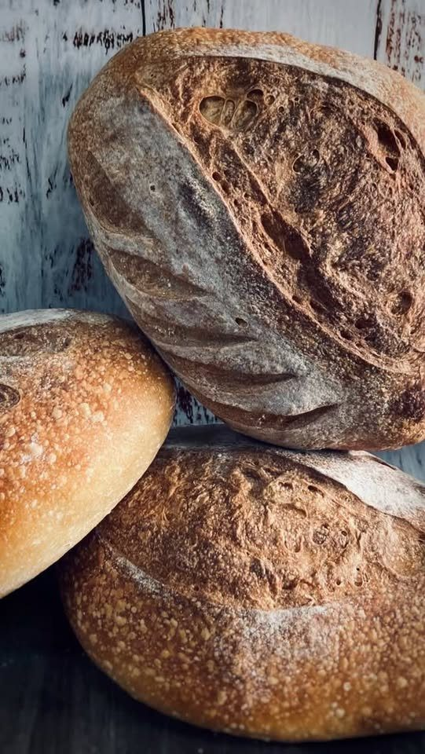
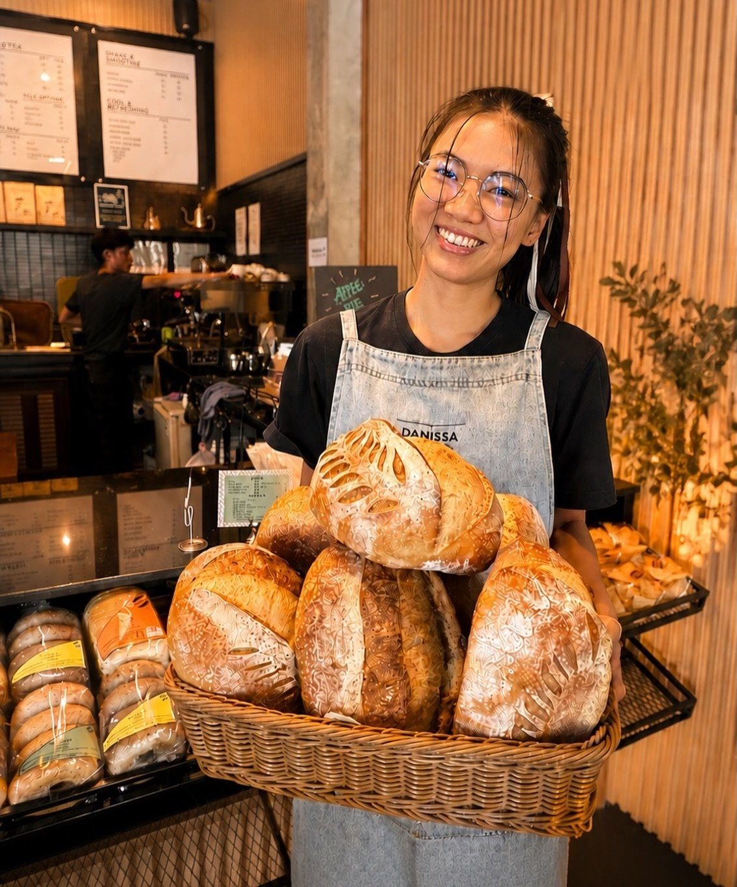
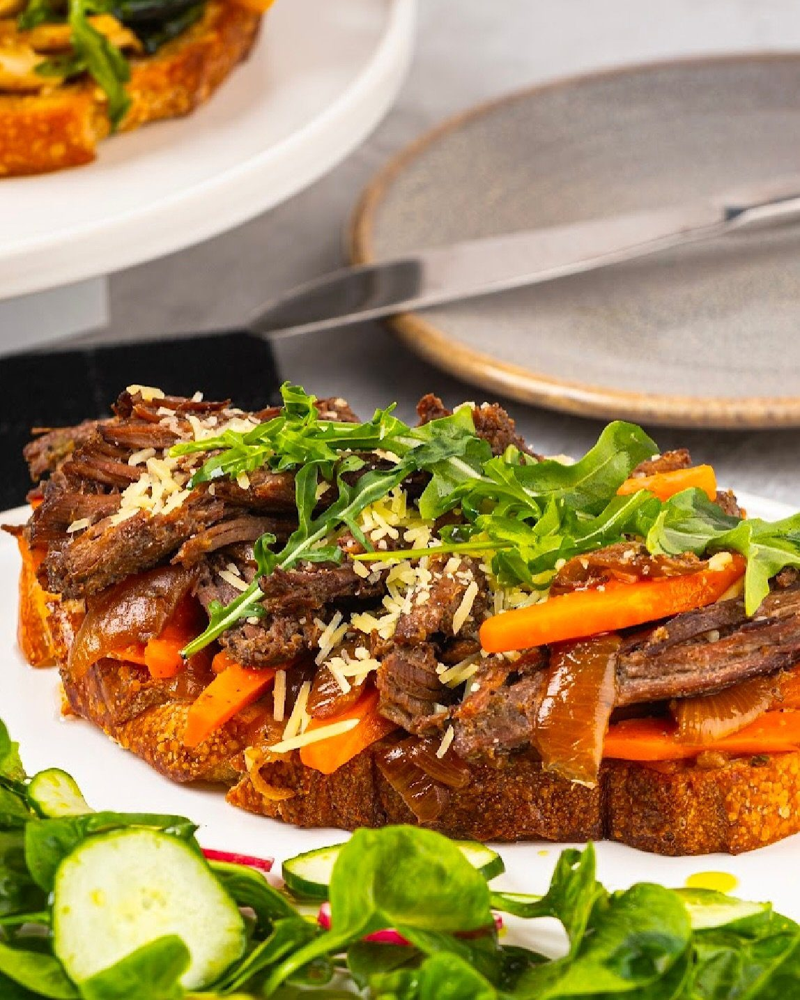
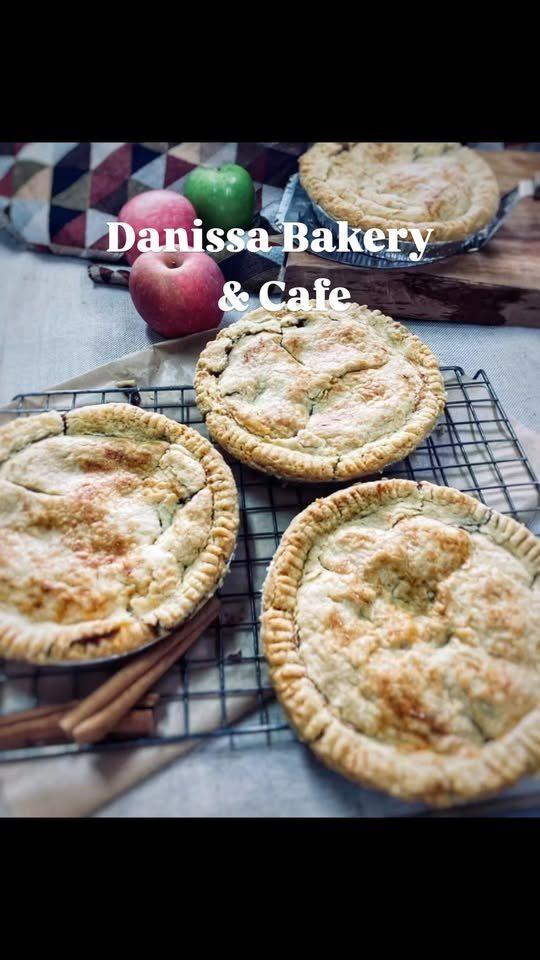
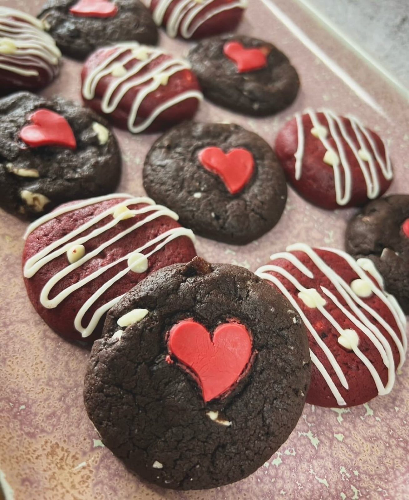

Sourdough & bread
ขนมปัง
Slow-fermented sourdough loaves, Fresh bakes daily

Bakery · Cafe · Hang Dong
เบเกอรี่และคาเฟ่ หางดง · ซาวร์โดว์อบใหม่ทุกวัน
Slow-fermented sourdough fresh from the oven, all-day brunch on grilled sourdough, cakes and coffee — on Ratchaphruek Road with outdoor seating.
Welcome · ยินดีต้อนรับ
Danissa is a bakery, cafe and restaurant in Hang Dong. We bake sourdough the slow way and build our brunch around it: Saturday lunch, slow brunch, or something in between.


Menu · เมนู
Seasonal specials and holiday hours are posted on our Facebook page.

ขนมปัง
Slow-fermented sourdough loaves, Fresh bakes daily

บรันช์
Spinach & Feta on grilled sourdough, Tuna Melt, Cajun Shrimp on Toast

เมนูใหม่
Pita & Hummus with Meat, Apple, Rocket & Walnut Salad, The Grown-Up Mac & Cheese

ขนมหวาน
Cupcakes & cakes, Pies, Seasonal pre-orders
Reviews · รีวิว
“94% recommend · 206 reviews”Facebook
“Can't wait to taste some of that!”Facebook comment
“Good bread takes time. Slow-fermented. Fresh from the oven.”Danissa
Danissa Bakery and Cafe
แวะมาหาเราได้เลย · ดานิสสา เบเกอรี่ แอนด์ คาเฟ่